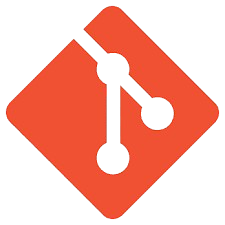
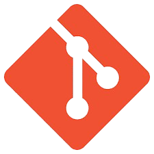

Automatic Pill Dispenser
Developed a web and mobile platform for doctors to prescribe medicines and for patients to access these prescriptions.
Implemented user ID-based authentication and secure payment processing for automated medicine dispensing.
Enabled seamless interaction between doctors and patients, ensuring efficient and accurate prescription management.
Click here for Project Link
Predicting the cause of death
Developed a deep learning model utilizing a multi-output neural network to predict causes of death based on country-specific data.
Analyzed country-wise data on annual death counts for various diseases.
Identified and predicted the top 1 and top 2 diseases likely to cause future deaths.
Click here for Project Link
Tilt Maze
Designed and implemented a virtual marble maze game controlled by tilting a Raspberry Pi.
Leveraged Sense HAT's accelerometer data to enhance gameplay by detecting player movements.
Utilized Raspberry Pi as the primary hardware platform to create an interactive and engaging gaming experience.
Click here for Project Link


.png "GitHub")
.png "MySQL") 

.png "Excel")
.png "HTML & CSS")
.png)
.png)